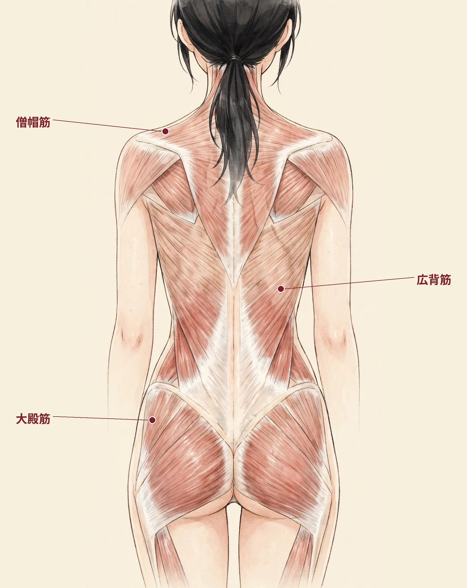

MUSCLE BALANCE
筋肉の張りとゆるみ
「ほぐしても、数日で元に戻る」。肩こりや背中の張りでよくうかがう声です。その背景には、筋肉の「バランスの偏り」があります。よく働いて張り続ける筋肉と、休んだまま弱くなる筋肉がセットで偏るため、張る場所だけをほぐしても、体の使い方が変わらなければ戻りやすいのです。
このページでは、張る筋肉と弱くなる筋肉の関係を、背面の筋肉図とともに解説します。難波で働く女性の毎日――デスクワーク、接客、立ち仕事、スマホ時間――の中で、どの筋肉に負担が集まりやすいのかも合わせて見ていきます。
張る筋肉と、弱くなる筋肉
筋肉には、縮んで張りやすい性質のものと、使われずに弱くなりやすい性質のものがあります。姿勢が崩れると、この偏りはさらに強まります。たとえば頭が前に出る姿勢では、首の後ろと肩を持ち上げる筋肉が働き続け、反対に首の前側の深い筋肉や、肩甲骨を寄せる筋肉は休んだままになります。
大切なのは、「張っている筋肉＝悪い筋肉」ではないということです。張っている筋肉は、本来ほかの筋肉が担うはずの仕事まで引き受けて、頑張りすぎている状態ともいえます。ケアの目的は、頑張りすぎをゆるめ、休んでいる筋肉に仕事を戻すことです。
背面の大きな筋肉
背面には、姿勢を支える大きな筋肉が重なっています（図1）。僧帽筋は、頭・首から肩先、背中の中央までを覆う大きな筋肉で、肩こりと最も関わりが深い筋肉です。広背筋は背中の下半分を扇のように覆い、腕を引く動きや姿勢の保持に関わります。大殿筋はお尻の筋肉で、立つ・歩く・階段を上るといった動きの要です。

これらの筋肉は、筋繊維の走る向きに沿って体を動かします。繊維の向きを知ると、「なぜこの場所が張るのか」「どの方向にほぐすとよいか」が見えてきます。当サロンのオイルマッサージでも、筋繊維の走行に沿って手を進めることを大切にしています。
張りとゆるみの連鎖
筋肉の偏りは、一か所で終わりません。肩を持ち上げる筋肉が張ると肩甲骨が上がり、肩甲骨の位置がずれると背中の筋肉が働きにくくなります。背中が働かない分、腰の筋肉が頑張り、腰が張る。さらに骨盤の傾きが変わり、太ももやふくらはぎにまで負担が広がる。体はつながっているため、張りは連鎖します。
だから当サロンでは、気になる場所だけを見るのではなく、全身のつながりとして状態を確認します。「肩こりで来たのに、脚までほぐすのですか」と驚かれることがありますが、連鎖の元をたどると、意外な場所に理由が見つかることも多いのです。
張りやすい筋肉・弱くなりやすい筋肉
姿勢の崩れ方によって差はありますが、一般に次のような傾向が知られています。
- 張りやすい筋肉：首の後ろ・肩を持ち上げる筋肉（僧帽筋の上部）、胸の前の筋肉、腰の筋肉、太ももの前、ふくらはぎ。
- 弱くなりやすい筋肉：首の前側の深い筋肉、肩甲骨を寄せる筋肉（僧帽筋の中・下部や菱形筋）、お腹の深い筋肉、お尻の筋肉、太ももの裏。
面白いのは、同じ僧帽筋でも、上の部分は張りやすく、下の部分は弱くなりやすいという点です。筋肉は名前ごとではなく、場所と役割ごとに状態が違うのです。
前面の筋肉との関係
体の前面では、胸の筋肉が縮んで固まりやすい代表です。デスクワークやスマホで腕を前に出す姿勢が続くと、胸の前が縮み、肩が内側に巻き込まれます（巻き肩）。すると背面の肩甲骨まわりは引き伸ばされたまま張り続けます。前面の縮みと背面の張りは、表裏一体です。
お腹側も同じです。お腹の深い筋肉が弱くなると、腰の筋肉が代わりに体を支え、腰の張りにつながります。前面と背面、どちらか一方だけを見ても、バランスは整いません。
ほぐす順番の考え方
当サロンの施術には、順番の考え方があります。まず美容整体で姿勢の土台を整え、張っている筋肉が「頑張らなくてよい」位置に体を戻します。そのうえでオイルマッサージで、張りの強い場所から順にゆるめていきます。土台がずれたまま筋肉だけをほぐすより、戻りにくい組み立てです。
また、弱くなっている筋肉には、ほぐすのではなく「使う」刺激が必要です。施術の中で軽く動かしていただくことや、ご自宅での簡単な運動をお伝えするのは、そのためです。ゆるめることと使うことの両輪で、バランスは整っていきます。
筋肉が張る3つの理由
筋肉の張りは、大きく3つの理由で起こります。
- 使いすぎ：同じ姿勢・同じ動作の繰り返しで、特定の筋肉だけが働き続ける状態。デスクワークの首・肩、立ち仕事のふくらはぎなどです。
- 血の巡りの低下：筋肉は縮んだ状態が続くと、内部の巡りが滞りやすくなります。冷えや運動不足が重なると、張りは取れにくくなります。
- 力み（無意識の緊張）：忙しさや緊張が続くと、肩やあごに無意識に力が入ります。仕事に集中している間、ずっと肩が上がっている方は少なくありません。
理由が分かれば、対策も変わります。使いすぎには姿勢の見直し、巡りの低下には温めと動き、力みには呼吸と休息。張りの背景を見立てることが、ケアの出発点です。
セルフケアの考え方
ご自宅のケアは、「張っている場所をゆるめる」と「弱い場所を使う」の2本立てが基本です。ゆるめるケアには、蒸しタオルで温める、湯船に浸かる、軽いストレッチが向いています。使うケアには、肩甲骨を寄せる動きや、お尻を使うヒップリフトのような小さな運動が向いています。
強い力で押し続けるセルフケアは、かえって筋肉を緊張させることがあります。「気持ちよい」と感じる強さで、短時間をこまめに。これが長く続けるコツです。仕事の合間の1分でも、積み重なれば体の使い方は変わっていきます。
こりと張りの違い
「こり」と「張り」は似た言葉ですが、指す状態は少し違います。張りは、筋肉が縮んで緊張している状態全般を指します。こりは、その緊張が続いて、触ると固いしこりのように感じられる状態を指すことが多い言葉です。
張りの段階なら、温めやストレッチでゆるみやすい一方、こりの段階では、まわりの巡りから整える必要が出てきます。自分の肩がどちらの段階かを知ることも、ケア選びの目安になります。気になる場合は、カウンセリングで一緒に確認しましょう。
筋肉のバランスと見た目
筋肉のバランスは、見た目にも表れます。肩を持ち上げる筋肉が張ると、首が短く見え、肩のラインが盛り上がって見えます。お尻の筋肉が弱くなると、ヒップラインが下がり、太ももの前ばかりが張り出して見えることがあります。
反対に、バランスが整うと、首すじがすっきりし、背中のラインがなめらかになり、お尻の位置が上がって見えます。見た目の変化は、体重の変化より先に、筋肉の使い方の変化として表れることが多いのです。
年齢と筋肉のバランス
筋肉量は、年齢とともに少しずつ減っていくことが知られています。とくに使われない筋肉から減りやすいため、「弱くなりやすい筋肉」の弱さは、年齢とともに進みやすい傾向があります。その結果、張る筋肉への依存が強まり、張りやこりを感じやすくなります。
だからこそ、年齢を重ねるほど「ほぐす」だけでなく「使う」ケアの大切さが増します。大きな運動でなくて構いません。階段を使う、歩く距離を少し増やす、座りっぱなしを避ける。日常の小さな動きが、バランスを保つ土台になります。年代別の体の変化については「女性ホルモンと年代別の変化」もご覧ください。
デスクワークと筋肉バランス
難波・心斎橋のオフィスで働く方に多いのが、画面をのぞき込む姿勢による偏りです。頭が前に出て、首の後ろと肩が張り、胸の前が縮み、肩甲骨まわりは伸ばされたまま。夕方になると肩が岩のように固く感じるのは、この偏りが一日の終わりにピークを迎えるためです。
対策は、1時間に一度立つ、画面の高さを目線に合わせる、肩甲骨を寄せる動きを数回はさむ、といった小さな工夫の積み重ねです。仕事帰りの夜にサロンでリセットし、日常では小さな工夫を続ける。その組み合わせが、戻りにくい体への近道です。
関連する症状・お悩み
よくあるご質問
ほぐしてもすぐ戻るのはなぜですか？
張っている筋肉だけをほぐしても、姿勢や体の使い方が同じままだと、同じ筋肉に負担が戻りやすいためです。当サロンでは、美容整体で姿勢の土台を整えてからオイルでほぐし、弱くなっている筋肉を使うコツもお伝えしています。
運動は苦手です。それでも大丈夫ですか？
大丈夫です。お伝えする動きは、肩甲骨を寄せる、お尻に力を入れるといった、日常の中でできる小さなものが中心です。激しい運動は必要ありません。無理のない範囲から始めましょう。
場所と予約方法を教えてください。
大阪市浪速区幸町1-2-9 RE-005 502号、JR難波駅から徒歩5分です。ご予約はLINE公式アカウントで受け付けています。入室方法はご予約確定後にご案内します。
料金と支払い方法を教えてください。
コースは1つだけです。オイルマッサージ＋美容整体の90分で10,000円（税込）、有料の追加オプションの販売はありません。お支払いは現金のみです。
専門解説シリーズ
施術者について
平賀 伸人（ひらが のぶひと／男性セラピスト）｜施術歴30年。鍼灸師（国家資格）・登録販売者・アロマセラピスト・パーソナルトレーナーの資格を持ち、オイルマッサージと美容整体を、その日の状態とご希望に合わせて組み合わせて施術します。このページの内容は、施術者の知識と経験をもとに作成しています。
料金・店舗情報
オイルマッサージ＋美容整体 90分 10,000円（税込）｜コースは1つだけです。有料の追加オプションの販売はありません。お支払いは現金のみです。
住所：大阪市浪速区幸町1-2-9 RE-005 502号（JR難波駅 徒歩5分）｜営業時間：月〜土 17:00〜22:00／日曜 12:00〜22:00｜女性専用・完全予約制・シャワー完備の完全個室｜当サロンでは鍼灸施術は行いません。
ご予約・お問い合わせ
ご予約はLINE公式アカウントで受け付けています。ご希望の日時をお送りください。変更・キャンセルはLINEでご連絡ください。キャンセル料はいただきません。